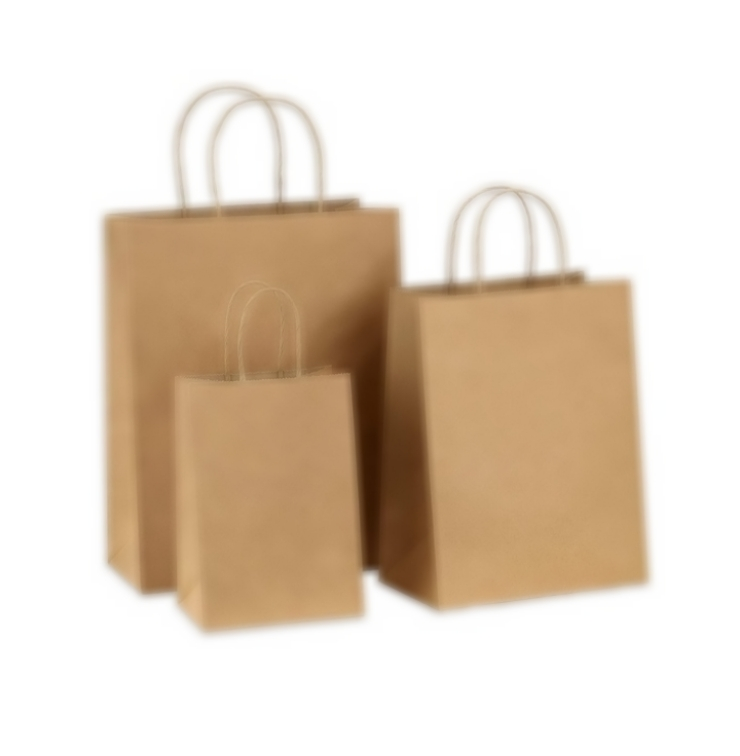
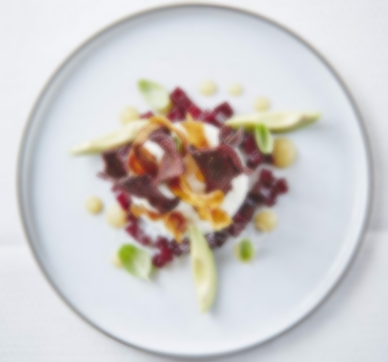
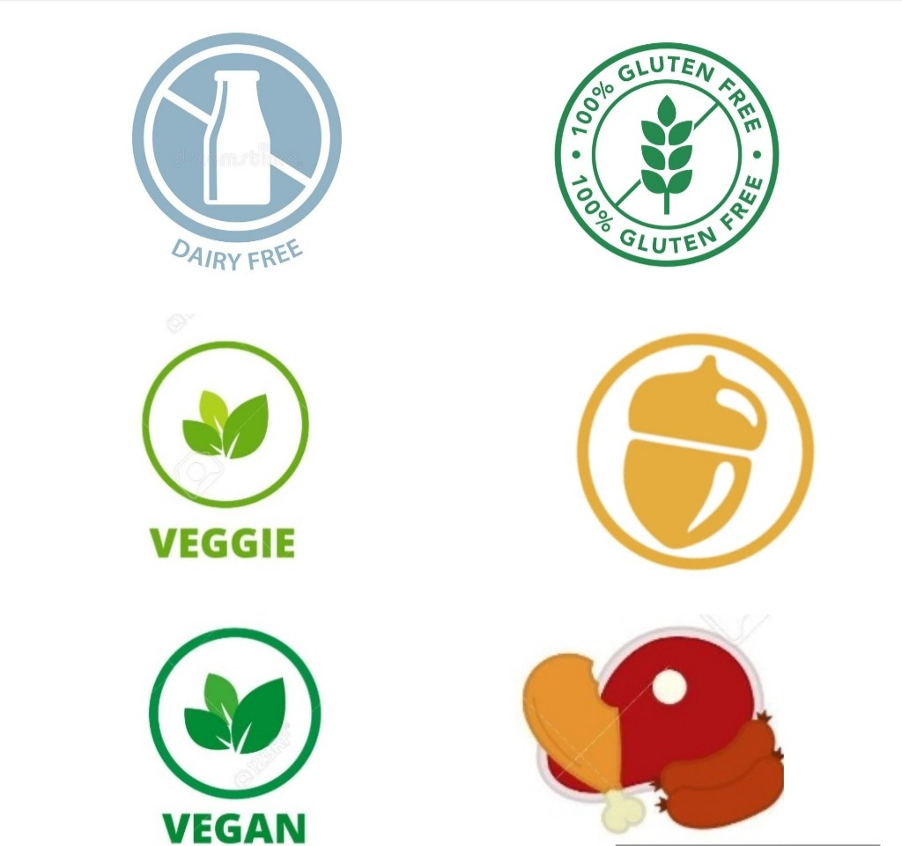

Home
Philosophy
Shop
A Note of Gratitude
Get In Touch With Us
Shop Food


Yummy Things Are Coming Your Way Very Soon!
Keep your head on a swivel...
Dietary Restrictions
At Save-A-Waste your satisfaction and saftey Is very valuable to us therefore, we have ensured to accomodate
dietery restriction symbols. E.g. vegetarian, milk product, nuts, gluten etc. Beside each of the food items
that are sold on our app.
Kindly, make yourself aware of these symbols, to avoid any inconveiniences. Please note, that Save-A-Waste
will not be held responsible in the event of any medical accident caused by the food items and
their contents after the purchase has been made.
The Symbols
This brief list contains the most common dietery restrictions that we have come across in our
food products so far. However, this list is not all-inclusive, Save-A-Waste will update these symbols
as we continue to expand both our partnerships and food products found on our app.

From left to right:
1. Dairy Free
2. Gluten Free
3. Vegetarian
4. Contains Nuts
5. Vegan
6. Contains Meat
Return to the Homepage